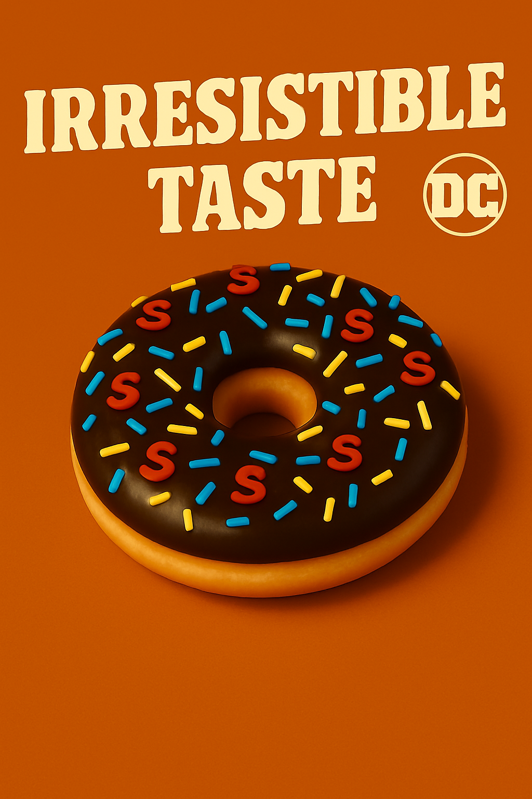
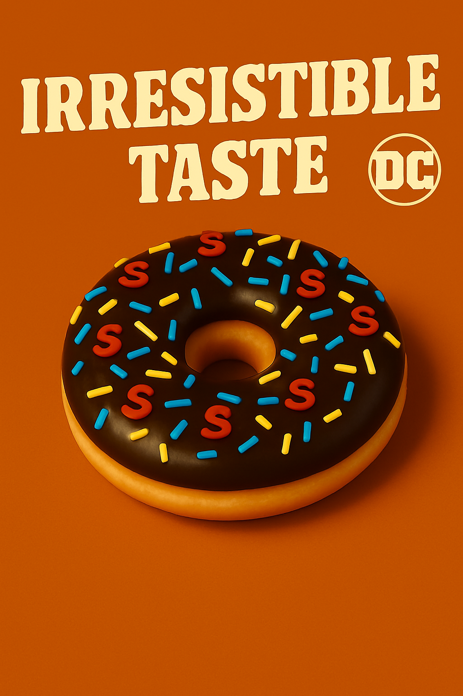

Constituendi autem sunt qui sint in amicitia fines et quasi termini diligendi. De quibus tres video sententias ferri, quarum nullam probo, unam, ut eodem modo erga amicum adfecti simus, quo erga nosmet ipsos, alteram, ut nostra in amicos benevolentia illorum erga nos benevolentiae pariter aequaliterque respondeat, tertiam, ut, quanti quisque se ipse facit, tanti fiat ab amicis.
Sed cautela nimia in peiores haeserat plagas, ut narrabimus postea, aemulis consarcinantibus insidias graves apud Constantium, cetera medium principem sed siquid auribus eius huius modi quivis infudisset ignotus, acerbum et inplacabilem et in hoc causarum titulo dissimilem sui.
Batnae municipium in Anthemusia conditum Macedonum manu priscorum ab Euphrate flumine brevi spatio disparatur, refertum mercatoribus opulentis, ubi annua sollemnitate prope Septembris initium mensis ad nundinas magna promiscuae fortunae convenit multitudo ad commercanda quae Indi mittunt et Seres aliaque plurima vehi terra marique consueta.
Batnae municipium in Anthemusia conditum Macedonum manu priscorum ab Euphrate flumine brevi spatio disparatur, refertum mercatoribus opulentis, ubi annua sollemnitate prope Septembris initium mensis ad nundinas magna promiscuae fortunae convenit multitudo ad commercanda quae Indi mittunt et Seres aliaque plurima vehi terra marique consueta.
Altera sententia est, quae definit amicitiam paribus officiis ac voluntatibus. Hoc quidem est nimis exigue et exiliter ad calculos vocare amicitiam, ut par sit ratio acceptorum et datorum. Divitior mihi et affluentior videtur esse vera amicitia nec observare restricte, ne plus reddat quam acceperit; neque enim verendum est, ne quid excidat, aut ne quid in terram defluat, aut ne plus aequo quid in amicitiam congeratur.